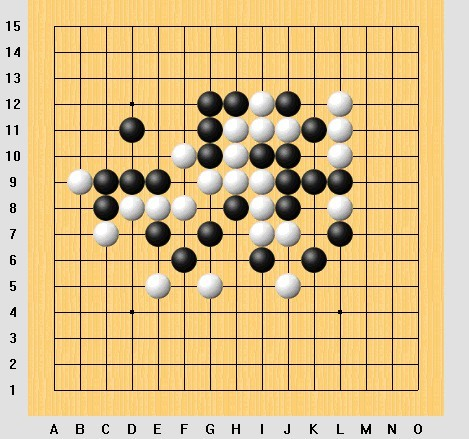

黑先,VCF!
#1 黑先,VCF! 作者：wuxiao 发表时间：2010-5-20 11:29:09
黑先,VCF!目算试试....［此帖子已被 wuxiao 在 2010-5-20 11:29:37 编辑过］
［ 逆刃 于 2010-5-20 11:57:26 时奖励此帖[金币加 20 威望加1］
#2 Re:黑先,VCF! 作者：愉悦深思 发表时间：2010-5-20 12:23:48
好题目，算了20多分钟，比相同步数的人工排局要舒服好多，至少没那么多反。［此帖子已被 愉悦深思 在 2010-5-20 12:25:24 编辑过］
#3 Re:黑先,VCF! 作者：岑小鱼 发表时间：2010-5-20 14:11:56
汗 目算了足足20分钟
位置刚刚好的
#4 Re:黑先,VCF! 作者：心上人 发表时间：2010-5-20 15:14:12
我花的时间更多，差不多半个小时啊#5 Re:黑先,VCF! 作者：啥呀 发表时间：2010-6-25 12:31:28
我从23点开始，目算到2点..
#6 Re:Re:黑先,VCF! 作者：岑小鱼 发表时间：2010-6-25 16:58:47
引用：
原文由 啥呀 发表于 2010-6-25 12:31:28 :
我从23点开始，目算到2点..够恒心的~~~
先判断出前面要冲的几个地方 以及 它们的汇合的地方
然后记住汇合之前的几个可能点 把主要功夫放在最后的变化里 就不用花那么多时间了
#7 Re:黑先,VCF! 作者：越狱行辕 发表时间：2010-6-25 20:17:06
目算15分钟。。。
=======上图对应的爱五子棋谱代码如下，以便你拆解：========
d11f10d9d8e9e8c9f8c8b9e7c7g7e5f6g5h8g9g10h10g11h11g12i11h12i12j12j11k11l11k9l12j10i9i10l10l9l8l7j7k6i7i6i8j9h9j8j5m6k8l6j6o6n6n9m9m8o10k10n7k13k12g13g14f11e10e11c11f12d10h14i15i13g15h13j13e13f13e12d12e14e15d14c15c14
====================================================== 算到 61 那点之前就不用反复计算了
把前面的 反算清楚 然后从 61 开始。。路线比较复杂。。表示幸亏没有领两段证书。。。还差一些
#8 Re:Re:Re:黑先,VCF! 作者：中中 发表时间：2010-6-27 22:15:53
多谢鱼哥指点。
我开始是把注意力放在左上角了，混乱了很久，后面是先确定了左上角的路线再去联系右边，迂回地走着。后面发现，先从右边着手确实会使计算路线清晰很多。做题中的一个弊端在于，开始时认为右边的V不起作用...
十分有待提高呀！
#9 Re:黑先,VCF! 作者：屏蔽 发表时间：2010-6-29 10:10:21
五分钟啊五分钟#10 Re:Re:黑先,VCF! 作者：岑小鱼 发表时间：2010-6-29 14:17:57
引用：
原文由 屏蔽 发表于 2010-6-29 10:10:21 :
五分钟啊五分钟这题目真给力
不亏是高手...速度超快啊
#11 Re:黑先,VCF! 作者：海湾浪琴 发表时间：2011-5-31 20:58:09
算了好久，头晕沉沉的